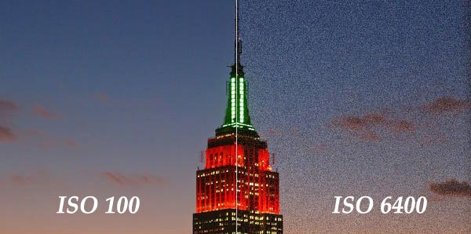

Photography can seem intimidating for a beginner, a filthy smartphone shooter who wants to take the plunge into the murky waters of DSLRs. There is a number of industry specific language that is designed to be obtuse and confusing for people who are not in the "know", this leads to self impose intellectual barrier to entry that shouldn't exist otherwise, or at least thats how I felt when I tried to learn photography myself.
Cameras are seemingly designed to have as many different kinds of buttons, dials and switches as possible labeled with strange markings that vary in character, shapes and color. And don't get me started on how these camera companies name their products: Canon 5DS R vs the Canon 1D X Mk II. These sounds like robots from some japanese anime from the 90s, which upon further though, isn't too far off.
And why the hell are my pictures always blurry? Why did I spend $500 on this camera kit and my pictures look like a blurry melted ice cream? What is exposure compensation? Why do people keep bragging about full-frame sensors? These are all questions I had too but no one to explain them to me. Granted Youtube and some unscrupulous folks on the dark web can make learning some of these things easier, they take way to long to consume. And if you're anything like me, if something takes longer than ~45 seconds to read, then its not worth reading. I believed that's a quote from Gandhi or something.
Now the bare-bone basics on how to make your pictures serviceable is understanding the "Exposure Triangle". This concept explains how each of the three main settings of any DSLR camera interact and affect each other to produce a single image (also known as an exposure). A weak grasp on this concept often explains the frustration of having a picture that is too blurry or too dark/bright.
This guide is a quick and dirty manual on what the "Exposure Triangle" is and how to use it to take better photos. I previously mentioned that understanding this concept will make your pictures serviceable but not necessarily good or compelling. Unfortunately thats the art of it and thats much more difficult to teach. Nevertheless, understanding the basics of the "Exposure Triangle" will only help your photography and unlock the potential of your fancy new DSLR camera.
The main function is of a camera is to take photos. And to take photos, you will need light. In fact, the word "Photography" literally means "drawing with light" in Mexican. Back in the old days where you had to manually wind up film cameras and send them off to lonely darkroom photo developers, photography was done through chemistry: film was coated in a photo-sensitive material (silver halides, essential compound salts of silver that will break down under exposure to light and form tiy grains of black metallic silver) and would be specifically exposed to light by a camera and its internal mechanisms. Today, digital cameras achieve a similar result through the means of electrical engineering: instead of film, modern cameras use an "image sensor", think a single reusable piece of film with a silicon surface that is able to capture the intensity and wavelength hitting the sensor by measuring dislodged electrons on the sensor surface.
However in both cases, the mechanisms to control how light hits the film/sensor is the same. Every camera has three main settings that will affect the amount and intensity of light hitting the sensor to create an "exposure (to light)". These three settings are listed and explained in further details below:
Shutter speed is the time that the film/sensor is exposed to light. Usually the film/sensor will be obstructed by shutter and/or mirror mechanism that will move away from the light-sealed compartment where the film/sensor is housed for a selected amount of time (usually within 1/100 of a second). The amount of time that the film/sensor is exposed to light determines how much light photos hit the film/sensor, thus how dark or bright the final image is. Shutter speed will also determine the amount of motion blur is in a photo. The smaller the increment of time (i.e. 1/1000 of a second or shorter), the more frozen the subject will be. This has more practical applications in high-speed photography or sports.
Aperture is the iris mechanism within a lense that is attached to a camera. This setting determines the size of hole that lets in light to hit the film/sensor. This setting is measured with the unit f-stop, a rather archaic method that describes the ratio of the lens' focal length and the diameter of the iris mechanism. Basically, the smaller the f-stop is, the larger the iris and the more shallow your depth of field is (meaning a short range in a photo where elements are sharp which elements outside of the range are progressively blurrier). Generally, lenses with large aperture (f-stop of 2.8 or lower) are more expensive and desirable since they allow a naturalistic blurred effect where the subject is in focus while everything else is blurry.
ISO can be thought of as how sensitive the film/sensor is to incoming light photos. On film, ISO refers the the International Standardization Organization system that governs the sensitivity of these films to light. Increased or decreased sensitivity to light is achieved different between film and sensors but the numbering system remains the same. The rule of thumb is: the lower the ISO number, the cleaner the image will be however it will be less sensitive to light, requiring more photons to hit the sensor to produce the image. The higher is ISO number, the more sensitive the film/sensor is to light, thus requiring less photons and thus less time the shutter needs to be opened to allow the film/sensor to be exposed adequately; however this comes at the expense of increased film/sensor noise, blurry and color-inaccurate artifacts as a result of larger silver halide particles imbedded in film or from the post-sensor gain applied to the electrical signals captured from the sensor.
